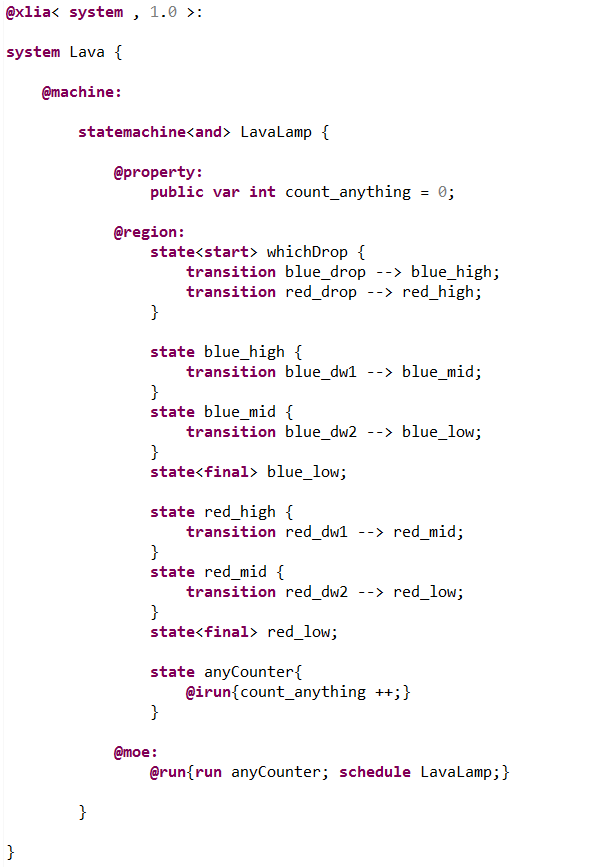
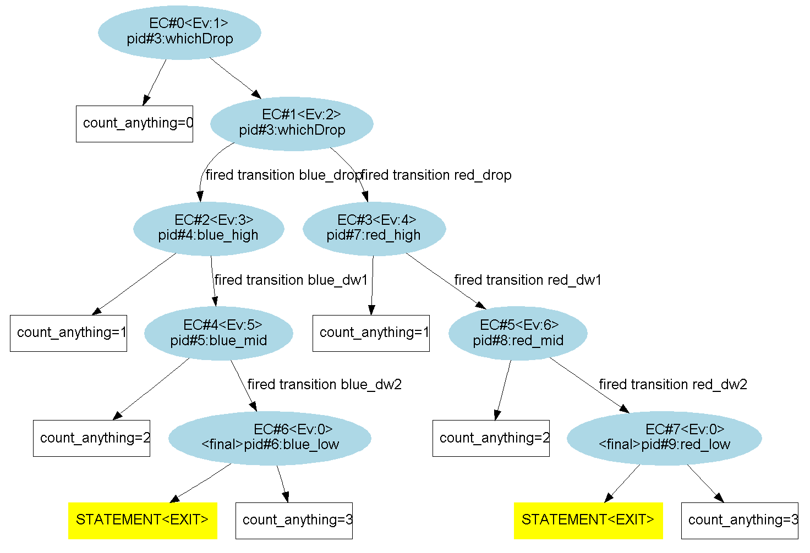
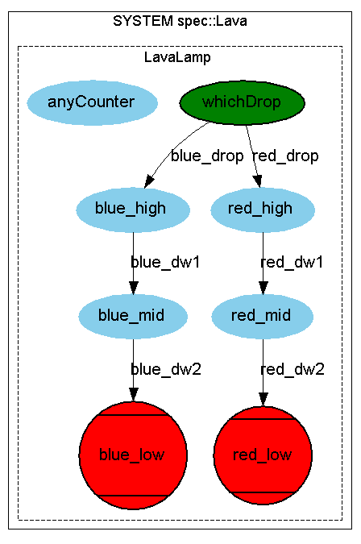

Let's consider a LavaLamp statemachine. There are two ink drops; a red one and a blue one. The system describes a part of the lamp's cycle. Either one of the drop can fall from the top to the bottom.
We'll implement within the statemachine a counter (it can count anything) under the form of a state that will be run in parallel to the other states. This parallel execution will be assured by using the "@moe:@run{...}" as follows :
At each step of execution, the engine will run the "anyCounter" state, then it will resume the normal scheduling of the LavaLamp. (By default it does : "@run{schedule LavaLamp;}"). As a consequence, this counter will count the number of execution steps from the beginning of the simulation until a final state is reached. This can be seen in the following exploration graph :
The system's graph is the following; we can see the state "anyCounter" that isn't related to the other states of "LavaLamp".
